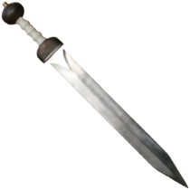
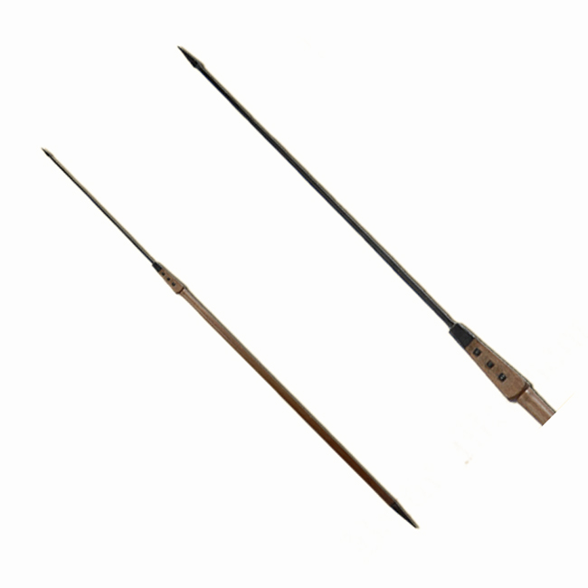

Wapens
De romeinen gebruikte verschillende wapens om hun tegenstanders te overwinnen.
Van zwaarden tot speren. Hier zijn een paar voorbeelden.
Gladius
De gladius was één van de standaard wapens van een romeinse legionair.
Een gladius was een kort zwaard met als doel een tegenstander te steken inplaats van ermee te kappen of slaan.
Dit is speciaal zo gedaan omdat toen de barbaren vooral grote bijlen en zwaarden gebruikte.
Als een romein namelijk in gevecht kwam met een barbaarse krijger was het moeilijk voor de romein om te winnen als ze geen steekwapen hadden
Als een barbaar aanvalt gebruikt hij al zijn kracht en heft hij meestal zijn wapen boven zijn hoofd.
Als een romein dit liet gebeuren kon de barbaarse krijger zijn wapen met veelkracht naar beneden slaan.
De harnassen van de romeinen zouden dan niet meer nuttig zijn voor de drager en de romein zal waarschijnlijk sterven.
Hierop bedachten de romeinen een gladius.

Als een barbaar dan bezig was met zijn wapen optillen kon de romein met zijn kleine steekwapen snel de barbaar recht in zijn borstkas of hoofd steken.
En als de romein de borstkas van de barbaar niet kan raken kan hij nog altijd voor de armen of benen gaan.
De gladius was vooral een effectief wapen omdat het ook snel kon worden bewogen. Als een tegenstander dan aanvalt kan de romein snel reageren.
De gladius was in combinatie met een Scutum een zeer dodelijk wapen.
Het was namelijk ook een van de belangrijkste uitrustingen van de romeinse legionairs die bijna heel europa hebben veroverd.
Hoewel het voetvolk was uitgerust met een gladius gebruikte de cavalerie een Spatha.
Het woord Gladiator komt ook van het woord Gladius.
Spatha
De Spatha is een zwaard dat werd gebruikt door de romeinse cavalerie.
Later, richting de val van het Romeinse Rijk, werd dit zwaard ook gebruikt door de legionairs en het voetvolk.
Hoewel eerst alleen de cavalerie een Spatha gebruikte, was het verschil tussen een Spatha en een Gladius niet groot.

Het grootste verschil is dat een Spatha langer was. Hiermee kon je dus ook hakken inplaats van te kunnen steken.
Nadat de romeinse legers meer richting het verdedigen gingen, was een nieuw zwaard nodig. De Gladius was juist gemaakt voor aanvallende gevechten.
Als je moest verdedigen was de Gladius geen goede verdedigings middel als je geen Scutum had.
De Spatha was dus langer dan de Gladius maar dit maakte het juist ook niet gemakkelijk om te hanteren.
Het zwaaien van dit zwaard nam veel ruimte in beslag en was dus niet handig. samengevat is de Gladius beter om mee aantevallen.
Pillum
De Pillum was een romeinse speer met als functie: naar tegenstanders gooien.
Elke legionair gebruikte de Pillum want het was een geweldig wapen. De pillum bestond namelijk uit een houten stok,
Met aan de kop een loden speerpunt. Deze speerpunten waren echter anders dan de gewoonlijke speer.

De punt had was piramidevormig met daarachter een dunne maar lange staaf.
Dit zorgte ervoor dat als de speer ergens in vast komt te zitten, een schild bijvoorbeeld,
dat het slachtoffer de Pillum niet los kon trekken zonder zijn schild kapot te maken.
Door deze speer konden de romeinen ook makelijker door harnassen heen gooien,
waarmee ze al van een afstand sterke tegenstanders kunnen uitschakelen.
Hoewel het een effectieve werpspeer was, is het niet bedoeld om als een normale speer te gebruiken.
Je kan er dus geen speerformatie mee maken, of cavaleristen mee aanvallen (tenzij je deze naar de cavalerist toegooit).
De Pillum is nog effectiever als deze wordt gebruikt met een Scutum
Bescherming
Ook het romeins leger had bescherming nodig.
Om zichzelf te beschermen hadden de romeinen verschillende middelen.
Scutum
De iconische romeinse schild, de Scutum, was een belangrijk deel van de vechtstrategie van het romeins leger.
De schild was rechthoekig met een ronde vorm die om het lichaam past.

De Scutum was een zeer effectieve schield waar romeinen een Schildpadformatie mee konden maken.
De vorm van de schild was zo gemaakt dat het ook de linker- en rechterkant van een romein kon beschermen.
De cavalerie gebruikte echter geen Scutum, omdat deze niet makkelijk te dragen was te paard.
De cavalerie grbruikte ook daarom ovale schilden die makkelijker te dragen waren.
De Scutum werd ook vaak in verschillende kleuren gebruikt, omdat zo gemakkelijker een Schildpadformatie konden vormen.
Elke rij kreeg namelijk een eigen kleur. b
Hierdoor konden de soldaten makelijk zien in welke rij ze moesten staan om een schilpadformatie te vormen.
Door de combinatie van een Gladius, een Pillum, een goede harnass, een Scutum en een goede helm,
waren de romeinen een geweldige vechtmachine geworden.